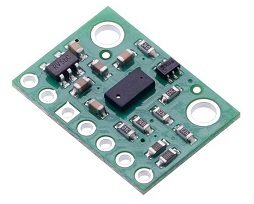
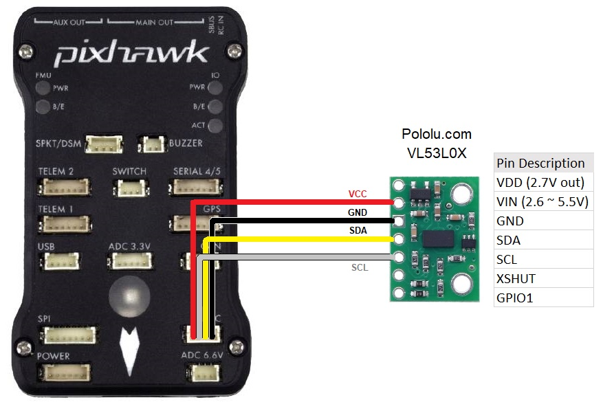

ST VL53L0X / VL53L1X Lidar¶
The VL53L0X & VL53L1X lidar are very small, affordable but relatively short range (2m for VL53L0X & 4m for VL53L1X) time-of-flight lidars
images courtesy of Pololu.com
Note
Support for this lidar was first made available in available in Copter-3.6, Rover-3.3, and Plane-3.9. Support the 4m ST VL53L1X was released with Copter-4.0.
Note
This sensor type is suitable for indoor use, however its range and precision is significantly reduced in bright sunlight conditions and is not recommended for outdoor use.
Where to Buy¶
Connecting to the Autopilot¶
Connect the VCC, GND, SDA and SCL lines of the lidar to the I2C port on the autopilot as shown below for the first rangefinder.
Please set the rangefinder parameters as shown below (this can be done using the Mission Planner Config/Tuning | Full Parameter List page):
RNGFND1_TYPE = 16 (VL53L0X)
RNGFND1_ADDR = 41 (I2C Address of lidar in decimal). The sensor’s default I2C address is 0x29 hexadecimal which is 41 in decimal.
RNGFND1_SCALING = 1
RNGFND1_MIN_CM = 5
RNGFND1_MAX_CM = 120 for the VL53L0X, 360 for the VL53L1X. This is the distance in cm that the rangefinder can reliably read.
RNGFND1_GNDCLEAR = 10 or more accurately the distance in cm from the range finder to the ground when the vehicle is landed. This value depends on how you have mounted the rangefinder.
Testing the sensor¶
Distances read by the sensor can be seen in the Mission Planner’s Flight Data screen’s Status tab. Look closely for “sonarrange”.(The value of this image is not a real value.)